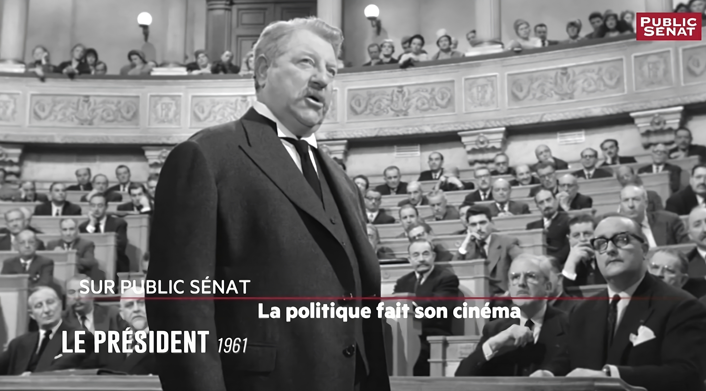

La décarbonation de l’audiovisuel ; l’écran de fumée écologique
Une analyse des impacts environnementaux de l'industrie audiovisuelle...
Lire la suiteActuellement étudiant à l'IEP de Fontainebleau, je suis passionné par le cinéma et les sciences politiques. Je partage ici différents articles reflétant mes réflexions sur plusieurs sujets d'actualités. Explorez mes articles ci-dessous.

Une analyse des impacts environnementaux de l'industrie audiovisuelle...
Lire la suiteUne exploration en profondeur de [Sujet de l'Article 2]...
Lire la suiteUne exploration en profondeur de [Sujet de l'Article 2]...
Lire la suiteAu cours des dernières années, l'histoire du cinéma a connu des remises en cause. Cela a surtout été le cas de l'histoire traditionnelle (Sadoul, Mitry...), dite " panthéon " parce qu'elle ressemble souvent plus à la critique de cinéma qu'à son histoire. Aux grandes fresques de ces auteurs, dont l'objet est généralement le " cinéma mondial ", s'est substituée une recherche plus pointue sur le cinéma des premiers temps, sur l'exploitation, sur l'économie du cinéma, sur ses institutions, etc. De cette histoire souvent très éclatée, ce livre propose une synthèse. Son auteur n'ignore évidemment pas les films et leurs créateurs, mais il privilégie les mouvements et les écoles. En articulant les approches économique, sociologique, institutionnelle et esthétique, il rend compte de l'histoire des conceptions et des pratiques cinématographiques. À l'heure où le cinéma français reste le seul vrai survivant du cinéma européen mais voit sa part se réduire au profit des États-Unis, à un moment où les cinéastes se mobilisent pour la défense de l'" exception culturelle " dans les échanges internationaux, cet ouvrage rigoureux et accessible vient à point.
En savoir plusL'attention portée aux gestes confirme le tournant anthropologique que connaissent depuis quelques années les études cinématographiques. Loin de toute assignation de sens comme de toute obligation de résultat, le geste s'impose ainsi, selon Agamben qui est le fil rouge de ce volume, comme l'une des dernières formes d'expression du politique. L'expérience du film rendrait ainsi possible une nouvelle définition de l'être-ensemble qui constitue le politique : un passage de relais où personne filmée, cinéaste, spectateur, tour à tour s'exposent et (se) regardent.
En savoir plusEn recevant la Palme d’or, la réalisatrice française Justine Triet a reproché au gouvernement de défendre une « marchandisation de la culture ». De quoi parle-t-elle ?
En savoir plusLa période des années 1960-1970 constitue l’« âge d’or » du cinéma militant français. Cette thèse, énoncée très récemment par Tangui Perron, est communément tenue pour une évidence parmi les spécialistes du champ ; idem pour l’affirmation que cette efflorescence serait indissociable de la multiplication, à partir de mai 1968 et dans un court laps de temps, des collectifs cinématographiques situés majoritairement à l’extrême gauche – brisant ainsi le monopole politico-culturel exercé par le PCF et la CGT –, ainsi que de la diversification des pratiques qui en ont découlé.
En savoir plusJe suis Thibault Marchetti, étudiant en science politique, passionné par les complexités du monde moderne où se croisent la rigueur analytique et l'imaginaire foisonnant. Mon domaine d'étude, la science politique, se mêle souvent au monde fascinant du cinéma, créant ainsi une toile où les récits cinématographiques se rencontrent et se confrontent aux dynamiques politiques contemporaines. J'écris sur le cinéma non seulement comme une forme d'art mais aussi comme un miroir des aspirations, des conflits et des rêves humains. Je suis animé par la conviction que le cinéma et la science politique sont les deux faces d'une même pièce : l’un illumine les désirs et les peurs de notre époque, tandis que l’autre décortique les structures et les mouvements qui façonnent notre société. Dans cet entrelacs d'images et de théories, je m’efforce de donner vie à une perspective nouvelle, où chaque article devient une analyse aussi captivante que le meilleur des thrillers.
Télécharger mon CV